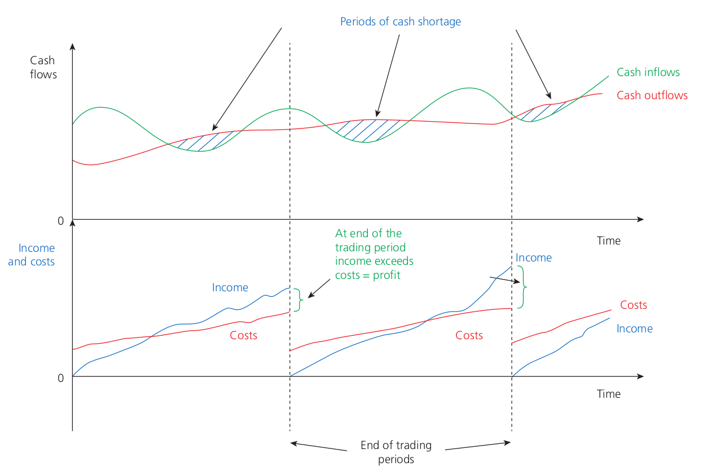
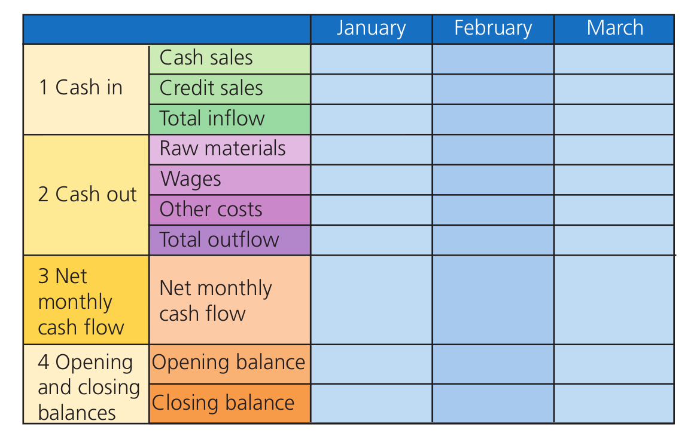
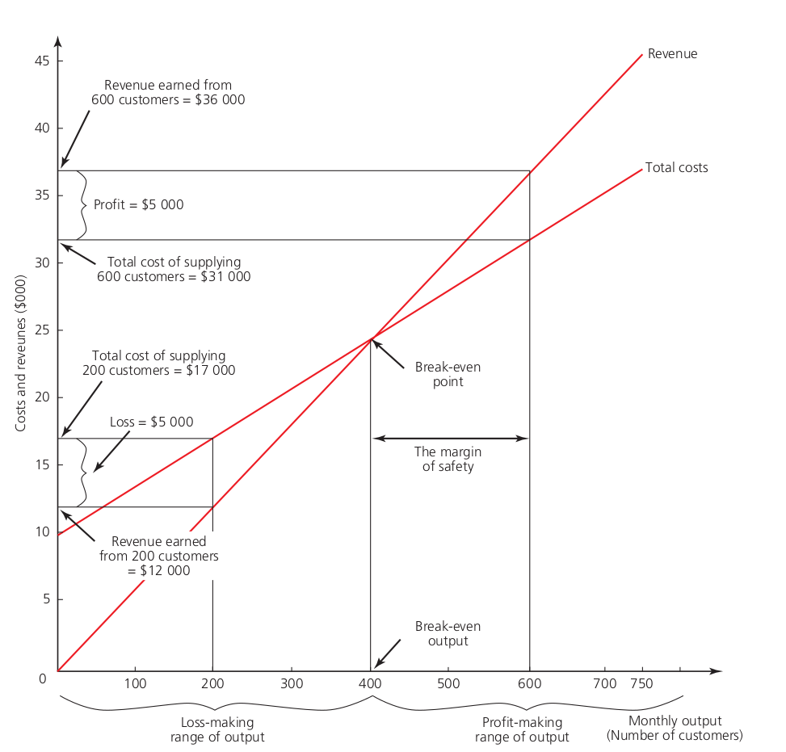

Finance and Accounting
Business finance
- An asset is any item owned by a business that can generate an income for the enterprise.
- Capital is the money invested into a business either by its owner or by organizations such as banks.
- Non-current assets are assets that a business expects to hold for one year or more. For eg. property and vehicles.
Need for business finance
- There are three major circumstances when a business needs to raise finance:
- When it is first started:
- Start-up finance or capital
- Purchasing non-current assets
- Cash to start trading
- To fund its market research and promotion
- When it grows:
- To buy additional non-current assets
- To hire and pay for new staff
- To buy additional supplies of groceries
- To survive:
- When first established
- When facing a crisis
- When it is first started:
Short and long term sources of finance
-
Short term sources of finance are needed for limited period of time, normally less than 1 year. It includes internal sources like working capital and retained profits and external sources like overdrafts.
-
Long term sources of finance are those that are needed for longer period of time. It includes internal sources like retained profits, sold off assets, sell and lease back and external sources like bank loans, venture capital etc.
Difference between profit and cash:

- Profit is the surplus of sells revenue over total cost
- Just because of business is profitable, it doesn’t mean that it will hold large sums of cash or even enough cash
- Reasons are:
- Business may sell large amount by offering customers long time to pay
- Business might hold large amount of inventory (jeweler)
- Business may have paid for non-current assets
- A profitable business may find it self short of cash and possibly unable to settle its bills as they fall due.
Business failure:
- Lack of finance is a common causee of business failure.
- Insolvency exits when a business’s debts or liabilities exceed the assets available to pay them
- In such cases a business is declared insolvent although the process might differ:
- Bankruptcy: it occurs when a business is judged unable to pay its debts by a court of law. When bankruptcy is declared property and savings of business is sold and money raised is shared between creditors.
- Administration and liquidation: Administration is a process available to a company to protect it self while it attempts to pay its debts and escape insolvency. An administrator is appointed for this. The process of selling assets for cash is called liquidation. Liquidation can be compulsory or voluntary.
Working capital
- Working capital is the cash a business has for its day to day spending.
- Working capital is what remains of a business’ liquid assets once it has settled all its immediate debts.
- Trade payables is the amount of money owned by a business for goods and services that have been received but not paid for.
- Trade receivables is the amount owed by business customers for products that have been supplied but not paid for.
- To improve working capital position a business can:
- Delay it’s trade payables
- Require that Its trade receivables are paid by its customers within a shorter time period
Revenue expenditure and capital expendituree
- The expenditure carried out by a busineess can be divided into:
- Revenue expenditure: the purchase of items such as fuel and raw materials that will be used up within a short amount of time
- Capital expenditure: spending on non-current assets
- A statement of financial position is a financial statements that records the assets and liabilities of a business on a particular day at thee end of accounting period. It was previously called a balanced sheet.
- An income statement is a financial statement showing a business’ sales revenue over a trading period and all the relevant cost incurred to generate that revenue.
Sources of finance
- The form of ownership or legal structture is a major influence on the sources of financee that are available to a business.
- Possible sources of finance for different legal forms are:
- Sole trader: owners saving, bank, suppliers, government grants and loans
- Partnership: partners saving, bank, suppliers, government grants and loans.
- Private limited company: suppliers, banks, government grants and loans, venture capital institutions, private share issues
- Public limited company: suppliers, banks, government grants and loans, venture capital institutions, public share issues, via the stock exchange
Internal and External sources of finance:
- Sources of finance can be divided into:
- Internal sources of finance:
- Owners investment
- Retain earnings
- Sales of unwanted assets
- Sale and lease back
- Working capital
- External sources of finance:
- Government grants
- Crowd funding
- Micro finance
- Trade credit
- Debt factoring
- Mortgages
- Bank loans
- Leasing and higher purchase
- Bank overdrafts
- Venture capital
- New partners
- Debentures
- Share capital
- Internal sources of finance:
- Factors affecting sources of finance:
- Cost of sources of financee
- Flexibility
- The need to retain control
- The use to which finance is put
- The level of existing debt
While selecting source of finance, managers must consider business’ financial situation, reputation, legal structure, and environment.
Forecasting and managing cash flows
- Cash is a business’ most liquid asset - it is notes and coins as well as funds held in the business.
A cash flow forecast is a document that records a business’ anticipated in-flows and out-flows of cash over some future period, frequently ove year.

- All cash flow forecast should contain the following elements:
- Cash in
- Cash out
- Net monthly cash flow
- Opening and closing balance
- Two main reasons why business might forecast cash flow are:
- To support applications for loan
- To help avoid unexpected cash flow crisis
- If managers can identify cash flow problems before they occur through the use of the cash flow forecast they are able to take remedial actions to prevent the problem occurring
- Although the use of cash flow forecast can help businesses to plan and manage their finance the process does involve a degree of uncertainty
- Forecasting cash inflows and outflows accurately can also be difficult
- A cash flow forecast may need amending for two reasons:
- Inflows differ from the forecast
- Outflows differ from the forecast
- Methods of improving cash flow:
- Reducing cost
- Inprove management of trade receivables and payables
- Debt factoring
- Short term burrowing
- Sale and lease back
- Leasing
- High purchase
Costs
Costs are expenses that a business has to pay to engage in its trading activities.
- Revenue is the income of the business receive from selling it’s goods or services
- Type of costs:
- Fixed cost: it do not change when a business alters its level of output
- Variable cost: variable cost alter directly with the level of forms output
- Total cost: it is the sum of total fixed cost and total variable cost Assuming that all cost are either fixed or variable
- Direct cost: it can be related to production of the particular product and vary directly with the level of output
- Indirect cost : indirect cost are over heads that cannot be allocated to the production of particular product and relate to the business as a whole
Approaches to costing
- There are two approaches that can be taken:
- Full costing: It allocates all the cost of production for the whole business. These costs are absorbed into each output unit this is also known as absorption costing.
- Contribution costing: the use of contribution is based on classifying cost as fixed or variable. Contribution can be defined as the difference between sales revenue and variable cost of production. Contribution has two potential uses:
- To pay fixed cost incurred by business
- Remaining is profit
Use of cost information
- Calculating average marginal and total cost: Cost and pricing decision
- Using cost to monitor and improve performance:
- To calculate profit, special order decision
Break even analysis:

- Breakeven output is the level of output or production at which a business generates enough revenue to cover all it’s cost of production.
- A breakeven chart can be used to show the margin of safety
- The margin of safety measures the quantity by which a firms current level of sales exceeds the level of output necessary to break even
Budgets
Budgets are financial plans.
- Types of budgets are:
- Sales revenue or income budgets
- Production or expenditure budgets
- Profit budgets
- Benefits of budget are:
- It allows managers to ensure that a business does not overspend.
- It allows senior managers to direct extra funds to important areas of the business.
- It can be used to motivate employees. Employees can gain satisfaction from given responsibility for a budget.
- Sales revenue budgets can also be used as targeets for employees, possibly as part of the appraisal process.
- Information on expenditure budgets allow senior managers to examine those areas of a business that manage costs effectively.
- Drawbacks of budget are:
- If a business indents that a significant proportion of its employees should manage budgets then training will be required.
- Allocating budgets fairly and in the best interests of the business is difficult.
- Budgets normally relate to the current financial year only and are short-term in nature.
- Uses of budget:
- Allocating resource
- Controlling and monitoring a business
- Measuring performance
Approaches to budgeting
Incremental budgets
-
Previous budget is used as basis and small percentage change may be made to allow for alterations.
-
Incremental budgets work well for stable business environment where changes are predictable.
-
Shortcomings:
- It can encourage overspending by managers.
- Managers may change the data to show efficient management or need for more budget.
- It does not encourage risk-taking.
Flexible budgets
-
It is a budget designed to change along with the sales volume or production levels.
-
A budget holder is responsible for the use and management of a particular budget.
Zero budgets
-
Zero budgets exist when budgets are automatically set at zero and holders have to argue their case to receive any funds.
- Advantages:
- It avoids budgets creeping up each year.
- It helps firms adjust their spending as the relative importance of areas within the firm changes.
- Drawbacks:
- Zero budgeting is effective for setting expenditure budgets but not for sales budgets.
- Budgets might be allocated according to negotiating skills of managers rather than genuine needs.
Variances
-
Variance refers to dissimilarity betweeen budget figures and actual figures.
- Categories:
- Favorable variances: When variance will result in business enjoying higher profits.
- Adverse variances: When variance leads to firm’s profits being lower than planned.
- Adverse sales variance can be controlled by:
- Improving company image
- Cutting prices
- Seeking new markets
- Updating range of products
- Increasing advertising and/or promotions
- Adverse production variance can be controlled by:
- Cutting wage or increasing labor productivity
- Seeking cheaper raw materials
- Reducing waste